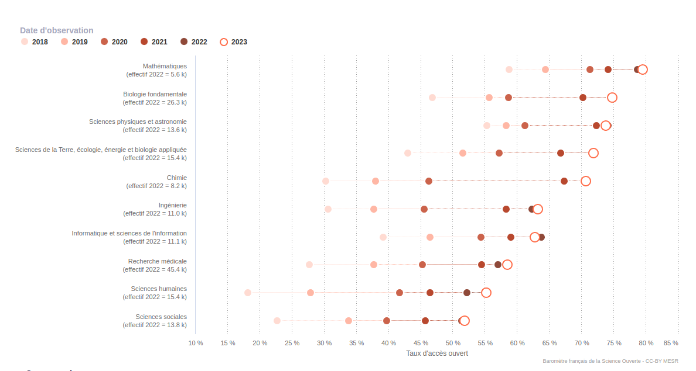
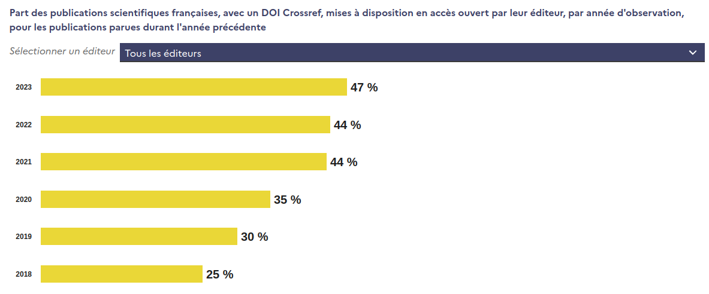
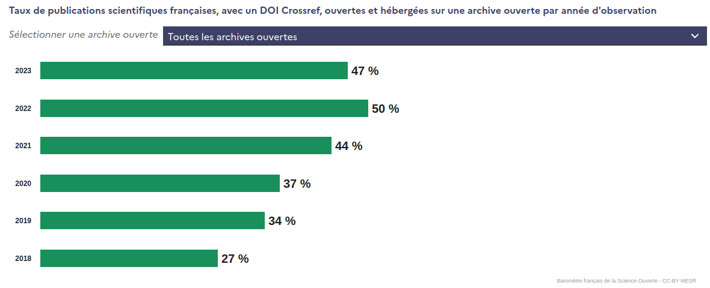
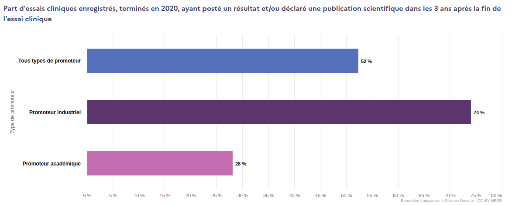
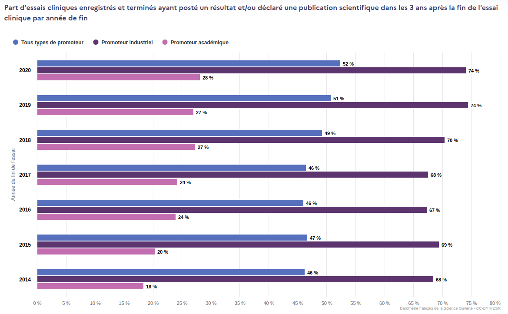
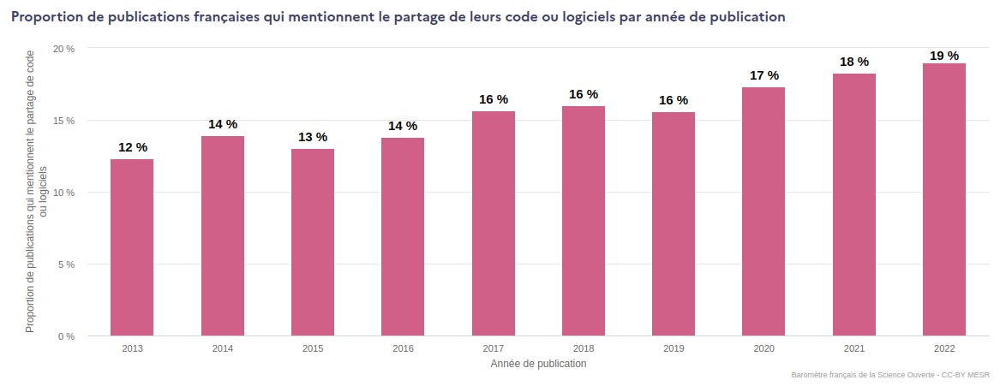
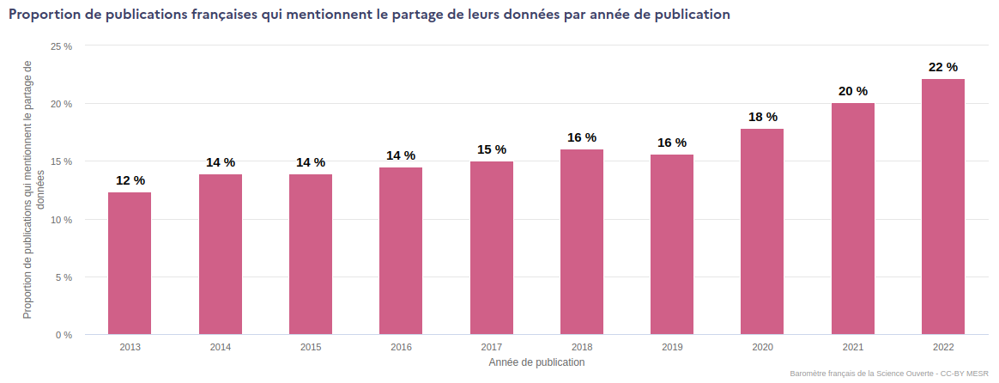
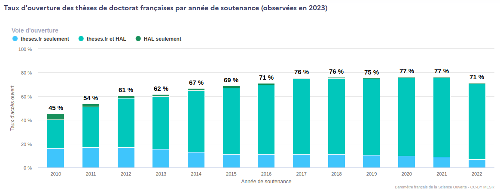
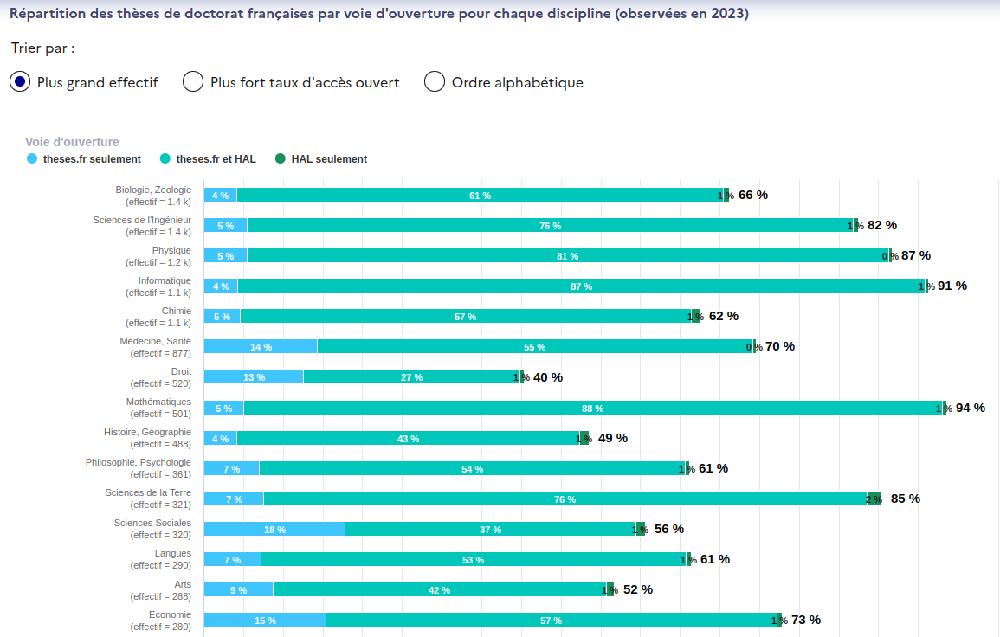

BSO 2023
Nouvelle version du baromètre de la science ouverte
Edition 2023
Edition 2023
22 février 2024
SPSO
Anne L'Hôte
SIES - DISD

Résultats Publications

Résultats Publications
- 65 % des 160 000 publications scientifiques françaises parues en 2022 sont en accès ouvert en décembre 2023
- Taux stable par rapport à l'année précédente (2022)
Résultats Publications

Résultats Publications
- Variation significative des niveaux d'ouverture des publications d'une discipline à l'autre
- Traduit des pratiques et des usages différents entre communautés scientifiques
- Exemple : mathématiques 79 % et sciences sociales 52 %
- Taux d'ouverture quasi stable au sein de chaque discipline
Résultats Publications

Résultats Publications
- Augmentation du mode d'ouverture via la plateforme éditeur (+ 3pts)
Résultats Publications

Résultats Publications
- Recul du mode d'ouverture via archive ouverte (- 3pts)
- Signal faible car le taux d'accès ouvert aux publications reste quasiment stable et les contributions des deux voies d'ouverture sont à présent à parité
- Changement de régime dans les dynamiques internes entre les voies d'ouverture
Résultats en santé

Résultats en santé
- En santé, la part des essais cliniques qui partagent leurs résultats dans les 3 années après la fin de l'essai reste faible (52 %)
- Forte disparité entre les types de promoteurs industriel et académique
Résultats en santé

Résultats en santé
- Cet indicateur évolue à la hausse passant de 46 % en 2014 à 52 % en 2020
Résultats données et code

Résultats données et code
- La part des publications partageant le code produit reste stable, légèrement inférieur à 20 %
Résultats données et code

Résultats données et code
- La part des publications partageant un jeu de données augmente à 22 % (+2 pts)
Résultats thèses de doctorat

Résultats thèses de doctorat
- Les thèses soutenues en 2021 sont en libre accès à 77 %
- Taux stable depuis 2017
- Recul du taux de partage de l'année de soutenance 2022 en raison d'embargos encore en cours
Résultats thèses de doctorat

Résultats thèses de doctorat
- Forte disparité entre les disciplines
- Exemple: mathématiques 94 % et droit et littérature 50 %
Works Finder - Démo
❔ Questions ?
📨 bso@recherche.gouv.fr
🔗 https://barometredelascienceouverte.esr.gouv.fr/